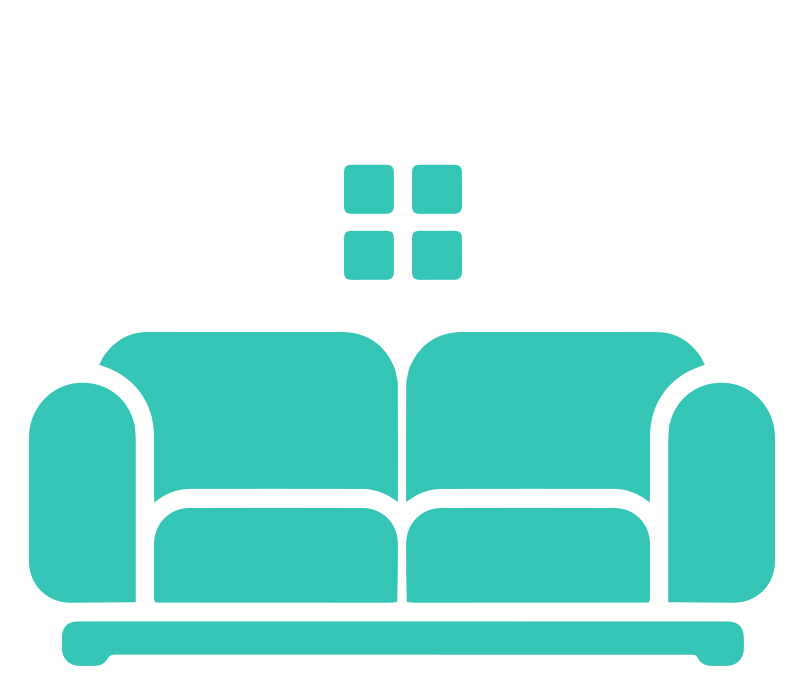
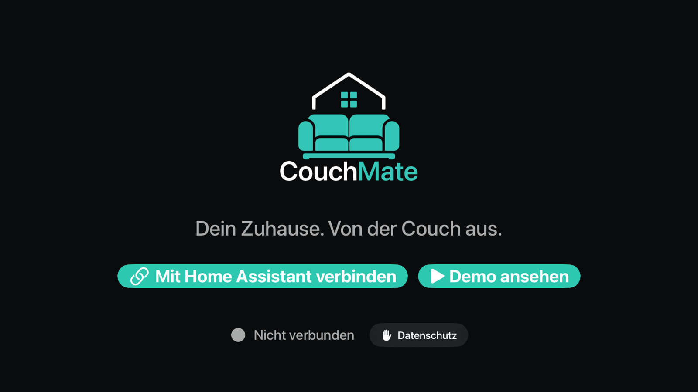
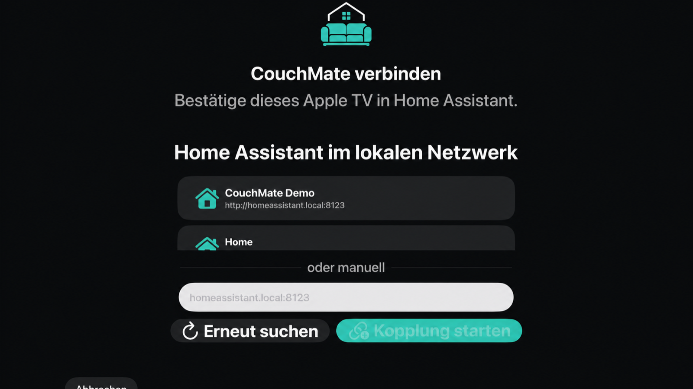
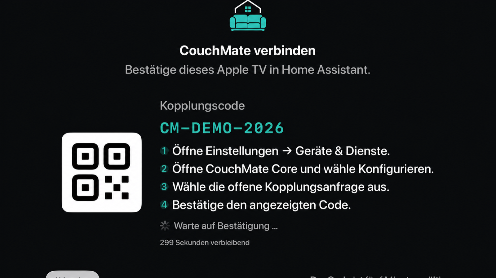
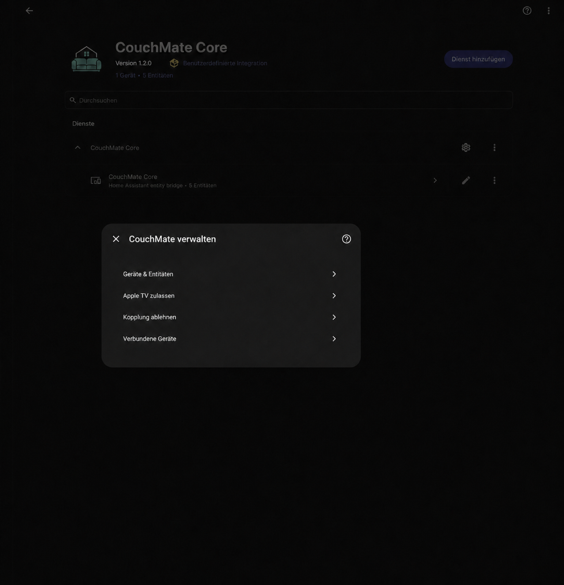
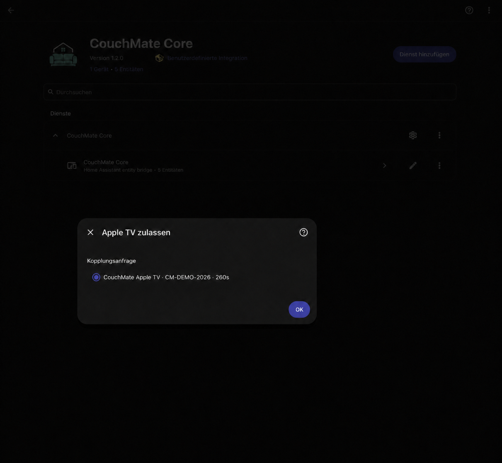
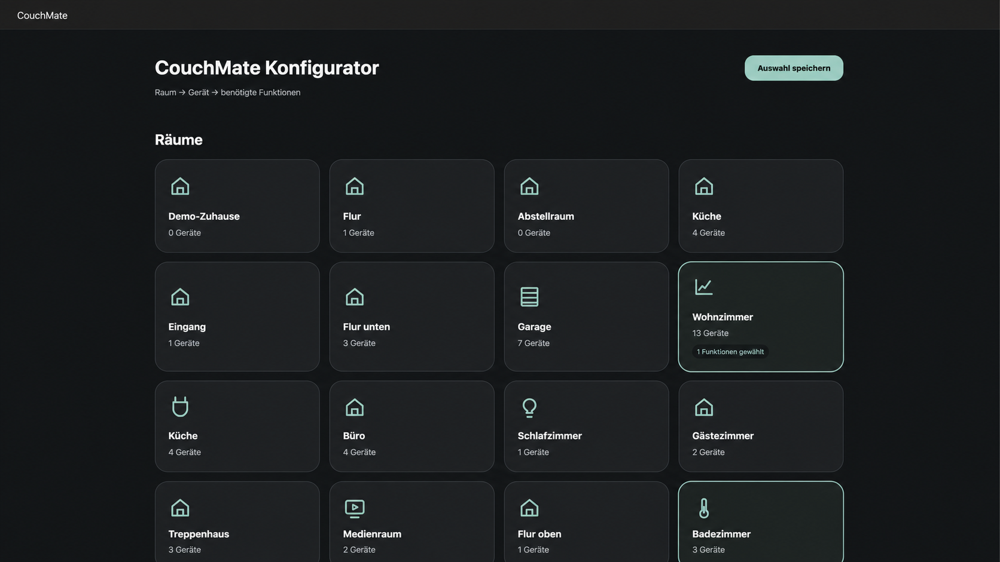
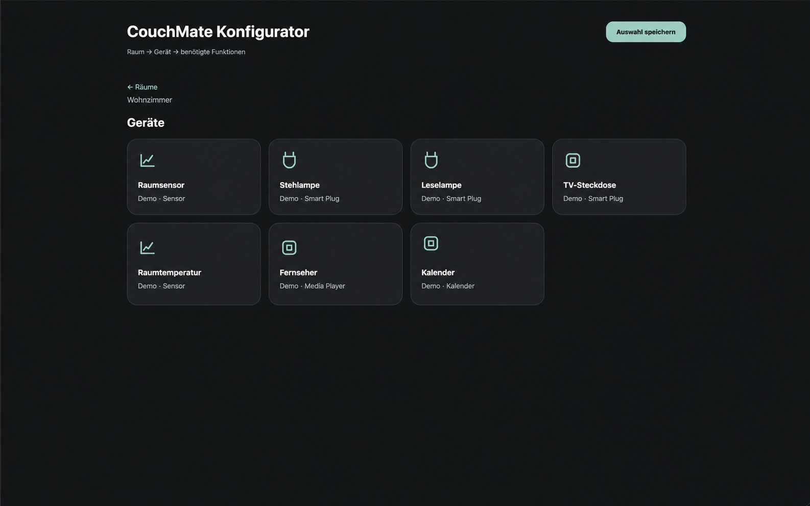
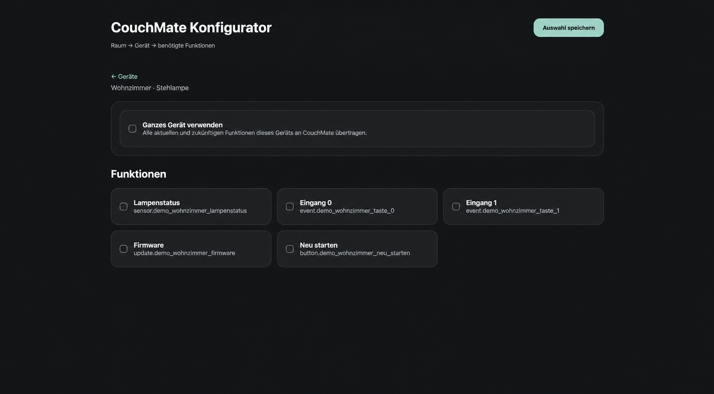

CouchMate Core
Installed and configured in Home Assistant.
Get CouchMate Core on GitHub
Pair CouchMateCouchMate for Apple TV
Securely connect CouchMate to your own CouchMate Core and Home Assistant instance. The pairing code expires automatically.
Start pairingBefore you start
Apple TV and Home Assistant must be able to reach each other. CouchMate Core must already be set up as a custom integration.
Installed and configured in Home Assistant.
Get CouchMate Core on GitHubCouchMate needs local network permission on Apple TV.
Keep the Home Assistant interface open on a phone or computer.
Step by step
The screenshots show the German interface. Select an image to open it at full size.
Open CouchMate on Apple TV and select “Mit Home Assistant verbinden”.

Select the discovered Home Assistant instance, or manually enter an address such as homeassistant.local:8123.

CouchMate displays a temporary pairing code. Keep this screen open on your television.

In Home Assistant, open Settings → Devices & services, CouchMate Core, and then Configure. Choose “Apple TV zulassen”.

Select the pending request and compare its code with the television. Confirm with OK. CouchMate connects automatically.

After pairing
Open CouchMate in the Home Assistant sidebar. The configurator guides you through room, device, and the functions you need. The screenshots show the German interface.
Select the room containing the devices you want to use with CouchMate. A highlight indicates that functions have already been selected in a room.

Open the device you want to use. The cards only show devices from the room selected in the previous step.

Select only the functions CouchMate should receive. “Ganzes Gerät verwenden” includes every current and future function of that device.

If it does not work